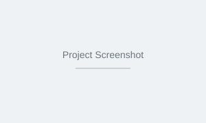

My Projects
A selection of my academic and personal projects. One is a live project published on GitHub; the others are simulated coursework projects created for this CSC 106 portfolio.

Email Insights Dashboard
A dashboard that analyses email activity and displays key insights such as message volume, response times, and sender frequency. Built with HTML, CSS, and JavaScript. This is my only publicly published project on GitHub.
Type: Real project (published)
Personal Expense Tracker
Simulated project. A simple web application that lets users add, categorise, and track daily expenses. Includes a monthly summary and basic data visualisation using charts.
Type: Simulated (coursework)
Campus Event Management System
Simulated project. A platform for university students to browse upcoming campus events, register for events, and receive reminders. Features event listings, registration forms, and a dashboard for organisers.
Type: Simulated (coursework)